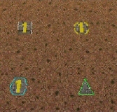

Manufacturing units is similar to building structures. The buildings that can build structures are Factories, Cyborg Factories and VTOL Factories.

Selecting a unit to be manufactured

The unit being manufactured
To manufacture a unit, you need to press the Manufacture button. A Fast Find bar will open at the bottom of the screen, between the radar and the Command Panel.
The bottom row of the two contains every Factory, Cyborg Factory and VTOL Factory built. Clicking it will zoom the camera to the structure.
To manufacture a unit, click the space above a factory. If this factory is capable of building a unit, it will appear in a menu on the left side of the screen.
A factory can only build a unit if the body of a unit is a certain type (unit/cyborg/VTOL), and if the factory has enough modules applied.
You can build up to nine units by repeatedly clicking the unit. You can also right-click the unit to lower the amount of units to build — right-clicking on a unit with no units queued will set the queue to 9.
While a unit is building, the Fast Find bar above the factory building the unit will be displayed. If the bar is green, the unit is gathering power to build the unit. If the bar is yellow, the unit is building.
When the unit is done building, it will spawn next to the factory, then proceed to a rally point. A rally point is created when a factory is made. Right-clicking on the factory in the bottom Fast Find row will centre the camera on a spawn point. Clicking a rally point will allow you to move it in a similar way to building a structure. Please note that moving a rally point while a unit is moving to one will not affect its path.

Rally points (clockwise, from top left): Cyborg rally point, Factory rally point, Repair Facility, VTOL rally point